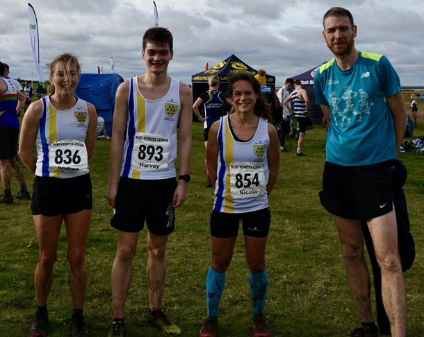

The penultimate race of this year’s Kent Fitness League took place in Allhallows Holiday Park near Rochester on Sunday February 4th.
This year’s Kent Fitness League has been hard fought between the leading contenders, Sevenoaks AC, Petts Wood Runners, Canterbury Harriers, Maidstone & Medway AC, Paddock Wood AC and Dartford Harriers, with record numbers of competitors.
The series comprises 7 gruelling cross-country races starting in Swanley in October, and touring the county with races in Knole Park, Eltham, Minnis Bay, Deal, Allhallows Park, and finishing in 3 weeks’ time in Rough Common on February 25th.
The women’s team competition has been particularly close, with Sevenoaks AC (champions in 2020, 21, and 2022) trying to catch last year’s champions, Canterbury Harriers, and stay ahead of Paddock Wood AC. The Sevenoaks team was reduced to 22 runners through injuries to several key runners and the team feared that they might not have enough women for a full scoring team.
On a wet and windy day the 447 runners set off on 6 mile two-lap course. From the start field, they ran down to the beach for a long technical section along the shoreline where they faced gravel, mud, seaweed and ditches. Then back up to the start field to do it all again.
Once again, Sevenoaks’ Andrea Berquez ran brilliantly to finish in 2nd place, closely followed by Nicola Glover (6th), Caroline Fenwick (9th), and Cath Linney (11th). The club’s top W55 runners were absent through injury, but 63 year old Becca Crowe ran the race of her life, achieving a rating 10 percentage points higher than she had previously achieved in KFL, coming home in 78th position. This pulled the women’s team up by 3 places to 2nd place on the day, and better still, by helping the SAC women to finished above Paddock Wood AC ensures that Sevenoaks women will finish in 2nd place in the league, irrespective of the results of the final race in 3 weeks’ time.
The SAC men’s team was also lacking several runners through injury, but once again, Guillaume Nineven ran well to finish in 17th place. The other scoring members of the men’s team were Stephen Hough (52nd in his debut race), Harvey Taylor (62nd), Seb Naughton (79th), James Baker (84th), David Kilpack (86th ), and Andrew Monk (91st).
The men’s team came 5th on the day and remain in 5th place in the series. The combined team came 5th on the day and remain in 4th place in the series. The full SAC results were as follows:
| Ov Pos | Lg Pos | Bib | Runner | Age | Time | Club | Score | Rtg | # |
|---|---|---|---|---|---|---|---|---|---|
| 17 | 17 | 879 | Guillaume Nineven | 38 | 35:24 | Sevenoaks AC | M1 | 94.75 | 16 |
| 50 | 2 | 836 | Andrea Berquez | 38 | 37:47 | Sevenoaks AC | V35 | 99.30 | 11 |
| 54 | 52 | 1083 | Steven Hough | 50 | 38:06 | Sevenoaks AC | V50:1 | 83.28 | Debut |
| 68 | 62 | 893 | Harvey Taylor | 19 | 38:59 | Sevenoaks AC | M2 | 80.00 | 14 |
| 73 | 7 | 854 | Nicola Glover | 36 | 39:18 | Sevenoaks AC | F1 | 95.80 | 14 |
| 87 | 79 | 878 | Sebastian Naughton | 49 | 40:32 | Sevenoaks AC | V40:1 | 74.43 | 16 |
| 92 | 84 | 834 | James Baker | 59 | 40:57 | Sevenoaks AC | V50:2 | 72.79 | 30 |
| 93 | 9 | 852 | Caroline Fenwick | 46 | 40:57 | Sevenoaks AC | V45 | 94.41 | 11 |
| 95 | 86 | 859 | David Killpack | 38 | 41:05 | Sevenoaks AC | M3 | 72.13 | 9 |
| 101 | 91 | 874 | Andrew Monk | 47 | 41:44 | Sevenoaks AC | V40:2 | 70.49 | 10 |
| 102 | 11 | 865 | Catherine Linney | 54 | 41:52 | Sevenoaks AC | F2 | 93.01 | 48 |
| 110 | 98 | 871 | Michael McCarthy | 58 | 42:24 | Sevenoaks AC | NSBLS | 68.20 | 29 |
| 111 | 99 | 846 | Chris Desmond | 60 | 42:27 | Sevenoaks AC | V60 | 67.87 | 88 |
| 121 | 106 | 900 | Daniel Witt | 49 | 42:49 | Sevenoaks AC | NS | 65.57 | 71 |
| 139 | 122 | 835 | Adam Bates | 40 | 43:41 | Sevenoaks AC | NS | 60.33 | 6 |
| 155 | 134 | 831 | Brian Allen | 52 | 44:22 | Sevenoaks AC | NS | 56.39 | 6 |
| 158 | 137 | 862 | Leonard Lai King | 44 | 44:30 | Sevenoaks AC | NS | 55.41 | 16 |
| 178 | 153 | 868 | Jonathan Marsh | 64 | 45:11 | Sevenoaks AC | NS | 50.16 | 10 |
| 192 | 164 | 897 | Duncan Warwick-Champion | 59 | 46:05 | Sevenoaks AC | NS | 46.56 | 25 |
| 199 | 30 | 853 | Vanessa Gilmartin | 48 | 46:29 | Sevenoaks AC | NSBLS | 79.72 | 32 |
| 203 | 173 | 866 | Alan Male | 54 | 46:39 | Sevenoaks AC | NS | 43.61 | 8 |
| 330 | 78 | 843 | Becca Crowe | 63 | 54:09 | Sevenoaks AC | V55 | 46.15 | 16 |

The full results are here.